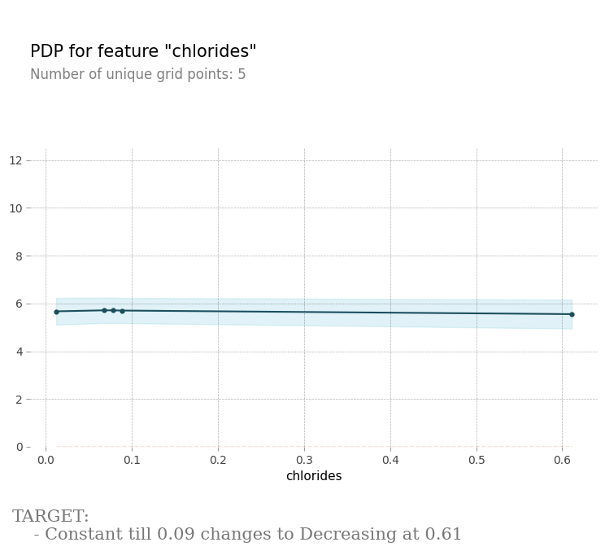
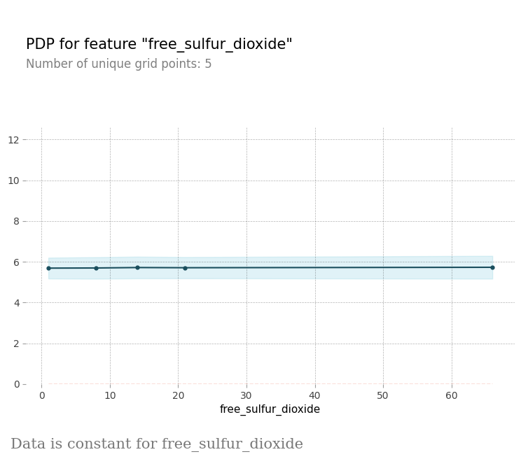
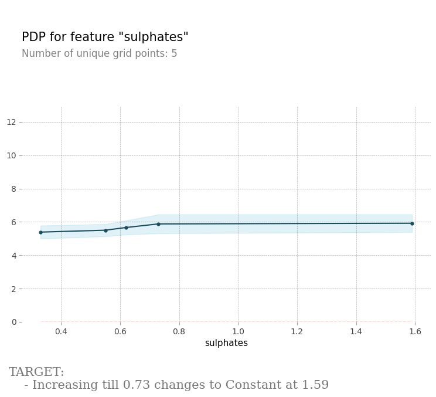
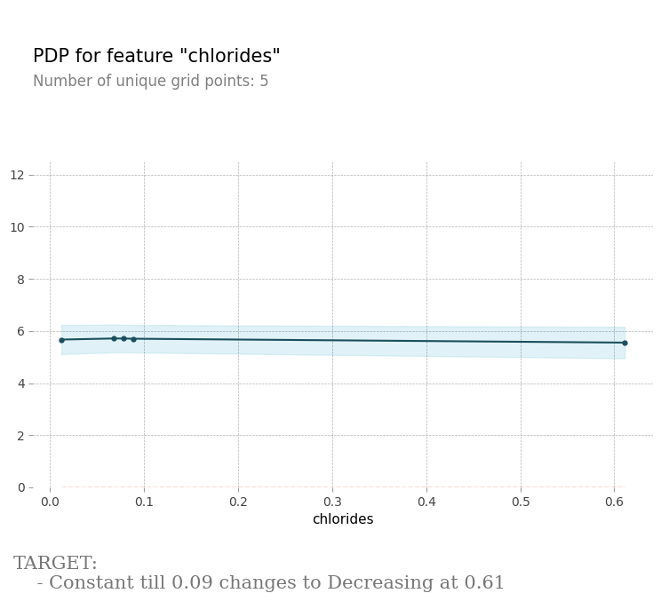
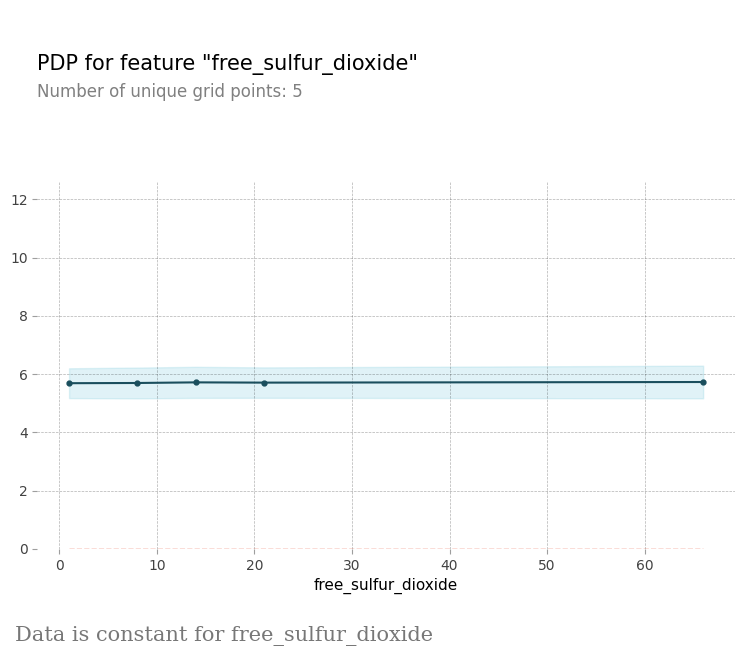
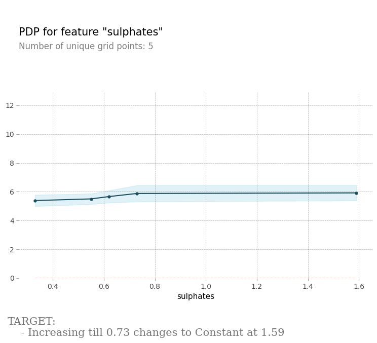

SHAP FEATURE IMPORTANCE

- Shap feature importance plot provides the importance for each feature towards making a prediction.
- Features with large absolute Shapley values are important.
- Features in Red color are positively Correlated while features in Blue color are negatively correlated with the output.
Recommendations
Top most important features for model building are as below-
alcohol
sulphates
volatile_acidity
total_sulfur_dioxide
chlorides

 




